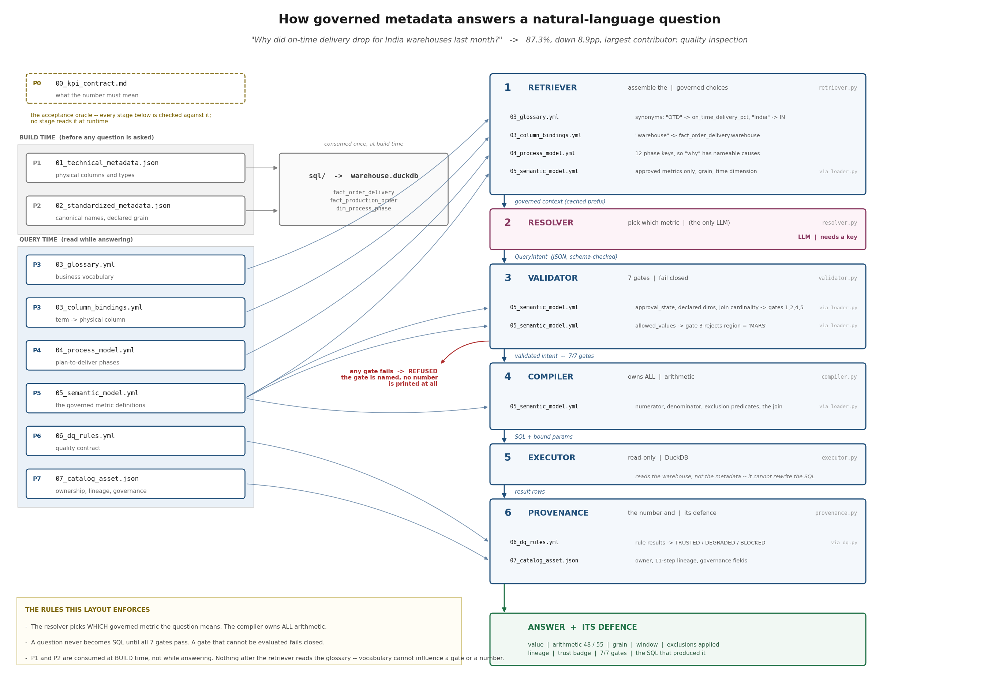
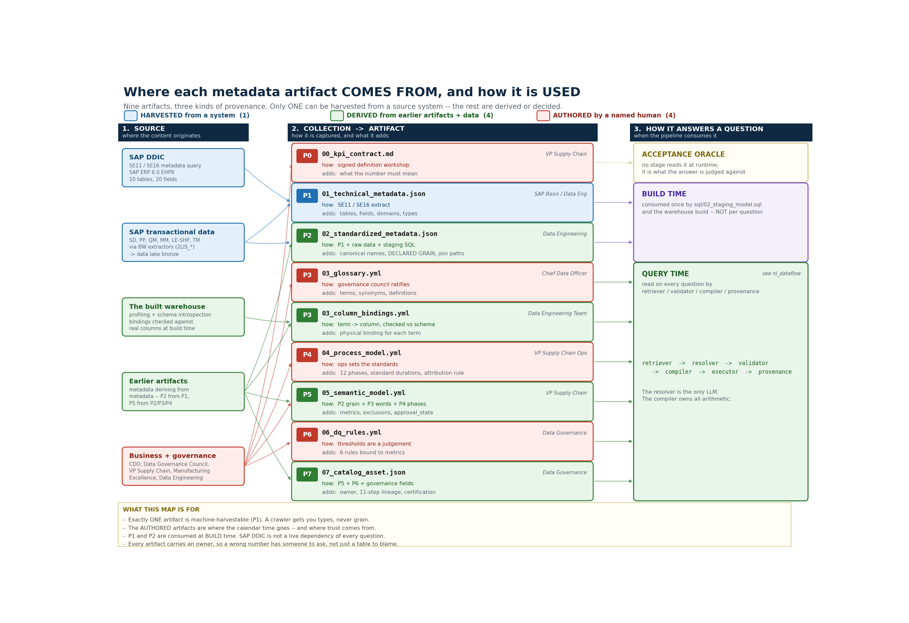

Two people asked the same data the same question and got 88.5% and 87.3%. One was wrong, and nobody could say which. Here is how to fix that for good.
In a quarterly review, the slide said on-time delivery for India last month was 88.5%. That same morning, someone had asked the exact same question of the exact same data: "on-time delivery for India warehouses last month." They got 87.3%.
Two numbers. Same data, same day. One of them is wrong, and nobody in the meeting could tell which one.
It helps to be clear about why that is a problem. Nothing crashed. No query failed. Both numbers look reasonable, both round nicely, and both have real SQL behind them that any engineer would have approved. The disagreement is quiet. Quiet is what makes it dangerous.
One order that ships in two boxes can be counted as one order or as two shipments. Count the shipments and you get 88.5%. Count the orders and you get 87.3%.
The delivery table has one row per delivery leg, not one row per order. An order that ships in two parts has two rows. Join orders to legs and count, and that order gets counted twice. If the first part arrived on time, the order now looks on time twice over, while the late second part is just one row among sixty.
Count it both ways and you get two answers:
The gap is 1.25 points. Small enough to pass for rounding, and it always lands on the high side. The flattering number is the one that reaches the board slide, because nobody double-checks good news.
The model did not invent anything. It wrote correct SQL against a table where nobody had written down what a single row means. The mistake was in the metadata, so the fix has to be there too.
Everything below follows from a single rule:
The model never writes SQL and never does the math. It reads a small, approved slice of metadata and fills in a form: which metric, which filters, which dates. A plain compiler turns that form into SQL.
Here is why that helps. Ordinary text-to-SQL asks the model to get grain, joins, exclusions and the fiscal calendar right on every single question. This setup asks it one much easier thing: which of three approved metrics did you mean. Everything that has to be exact is built from metadata, by code, the same way each time. Two people who word the question differently get the same number, because the number was never the model's to choose.

Six steps: retriever, resolver, validator, compiler, executor, provenance. Only the resolver calls a model. Only the compiler writes SQL. The checks run before any SQL exists, so a rejected question never becomes SQL at all.
One detail is worth a look: the validator and the compiler never read a file. They work from a parsed model, so the compiler can't even see the glossary. The words are resolved before the checks run, which means a synonym someone typed can never reach the math.
The method is easy to state. Each step produces one file, and each file fixes one way that plain-English questions go wrong. If a step doesn't fix a named problem, you can skip it.
00_kpi_contract.md: Nobody agrees what "on-time" means, so no answer can be wrong.01_technical_metadata.json: Column names pulled from SAP, with no business meaning.02_standardized_metadata.json: Types and keys don't line up across source systems.03_glossary.yml + 03_column_bindings.yml: "OTD", "delivery reliability" and
"promise adherence" map to no column.04_process_model.yml: You can answer what happened, but never why.05_semantic_model.yml: The model makes up its own math. This is where 88.5% dies.06_dq_rules.yml: A number built from incomplete data comes back sounding certain.07_catalog_asset.json: The answer arrives with no paper trail, so nobody can defend it.Nine files, eight steps: step 3 produces two, because a business term and the column it maps to are owned by different people.
Two files do most of the work. The first is the glossary, where the words are pinned down in plain language the model reads:
- term: On-Time Delivery %
definition: >
Share of eligible customer orders delivered on or before the promised
delivery date. Measured at order grain (one row per order_id). An order
counts as delivered only when its final delivery leg arrives. Excludes
cancelled orders and orders not yet due.
synonyms: [OTD, on time delivery, delivery reliability, promise adherence, OTIF]
owner: VP Supply Chain
That one line, "one row per order_id," is the whole point. The second file is the metric itself:
- name: on_time_delivery_pct
label: On-Time Delivery %
entity: fact_order_delivery
grain: order
expression:
type: ratio_percent
numerator: sum(CASE WHEN is_on_time THEN 1 ELSE 0 END)
denominator: sum(CASE WHEN is_eligible THEN 1 ELSE 0 END)
exclusions:
- key: cancelled_orders
predicate: order_status <> 'CANC'
rationale: A cancelled order was never due; counting it inflates the denominator.
business_rules:
- Order grain only. Counting by delivery leg double-counts split shipments.
owner: VP Supply Chain
approval_state: approved
Four things to notice, because each is a bug waiting to happen. grain: order is written down,
not guessed. That is the line that kills 88.5%. Every exclusion carries a reason, so nobody
deletes it next quarter thinking it was a mistake. approval_state: approved is checked before
the model ever sees the metric, so it can't ask for one that isn't ready. And the ratio is stored
as a top and a bottom, never as a finished percentage, because averaging percentages across
groups of different sizes gives you a wrong answer that looks fine.
Before any SQL is written, seven checks run. All of them, every time. If a check can't be evaluated, it fails and the question is refused.
metric_approved: refuses a metric that isn't approved, or doesn't exist.dimensions_declared: refuses grouping by something the model made up.filters_bound: refuses region = 'MARS', a value outside the allowed set.grain_matches: refuses the 88.5% query. It never becomes SQL.no_fanout: refuses a field only reachable through a one-to-many join.time_window_bounded: refuses a date range that is open-ended or backwards.exclusions_applied: refuses a metric whose required exclusions can't be applied.Run the 88.5% question through the system and this is what comes back. It is the real output, not a paraphrase:
REFUSED on_time_delivery_pct: the intent did not pass validation.
gates failed grain_matches
grain_matches Metric 'on_time_delivery_pct' is certified at grain 'order'; the
intent asks for grain 'delivery'. Aggregating at the wrong grain
changes the number.
No number is shown. A value that failed a gate is not a caveated answer,
it is an unverified one.
"I can't answer that, and here is the rule that stopped me" is something you can put in front of a CFO. A system that always hands back a number is not.
This is the question that comes up as soon as someone has to pay for the work. The honest answer is a picture and a count.

Left to right: the source, how it was collected, the file, and when the pipeline reads it.
Only one of the nine files can be pulled from a system automatically. The other eight split two ways:
Put plainly: a crawler gives you tables, fields and data types. It can't give you grain, exclusions, an agreed definition, or how long a step is supposed to take. Those are the things that decide whether an answer is right or only well-formed. The 88.5% mistake lives in a field no crawler can see. That is why pointing a catalog at a warehouse and switching on "ask the data" gives you a demo, not something you can trust.
"What was it?" only needs a metric and a grain. The question people actually ask is "why did it drop?" To answer that you need a timestamp for each step, a planned baseline for each step, and one attribution rule written down once. That is why the factory floor is in scope: the reason sits upstream in production, not in the delivery table. Here is the real output:
ANSWER On-Time Delivery % is 87.3% -- 48 of 55 eligible orders delivered on or
before the promised date
BREAKDOWN
Quality inspection 4
Transportation 2
Production execution 1
unattributed 0
Largest contributor: Quality inspection (4 of 7 late orders).
COMPARISON
prior window June 2026 (2026-06-01 to 2026-06-30)
prior value 96.2% (25 / 26)
change down 8.9pp (96.2% -> 87.3%)
On those four orders, quality inspection ran 4.75 days over its one-day target, with no spare time in the schedule to absorb it.
And here is the part that matters. Transportation actually ran faster than planned on 5 of the 7 late orders. Logistics was the obvious suspect, and logistics was ahead of schedule. Without a baseline for each step you would get a confident, reasonable, wrong story, and you would go fix the wrong team. The report prints "unattributed 0" even though it is zero, on purpose: an attribution that quietly drops the orders it can't explain is one you can't trust.
It is easy to read too much into governance metadata, so to be clear: this helps people find and understand data. It is not access control, consent, or data retention. The owner field records who is accountable; it does not stop anyone from running a query. One more honest note. The live version that calls a model over the network is described here but not tested, because it needs API keys this setup doesn't have. The check script marks that case SKIP instead of pretending it passed.
Nothing here is for show. The write-up is tested alongside the code, so every number in it is checked against the real data. A guide with stale numbers just wastes your time. Five commands, no API key, no network:
pip install -r requirements.txt
python src/build_warehouse.py
python src/ask.py --offline Q1 # 87.3%, 48/55, TRUSTED, 7/7 checks
python src/ask.py --offline Q2 # the diagnostic breakdown above
python verify_acceptance.py # measures every acceptance criterion
The full project, with sample data, all nine files, the pipeline, and a single file you can paste into a terminal, is here: github.com/BeenaKhandelwal/semantic-layer-nl.
Plain-English questions don't fail because models can't write SQL. They fail because the facts that make a question answerable correctly, like grain, cardinality, exclusions, agreed definitions and planned baselines, were never written down where the system could read them. Write them down, and the model's job shrinks to the part it is good at.
So, what is your team's answer to "which of these two numbers is right?" If it's "ask Priya," you already have a semantic layer. It just isn't written down.